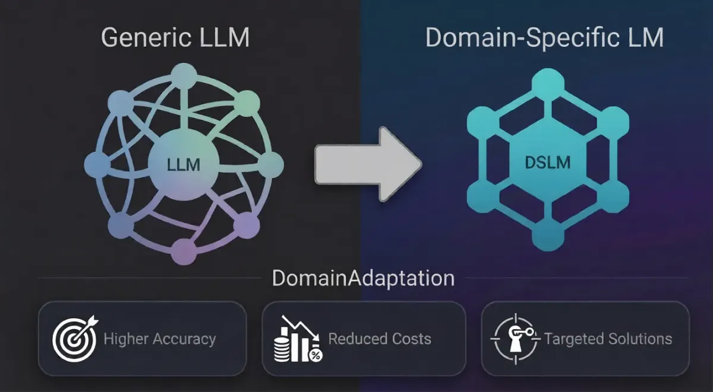

Engineered to Cross
the Valley of Death.
Industry data reveals a 68% failure rate for enterprise AI initiatives. We don't build prototypes; we architect sovereign infrastructure for permanent deployment.
Specialized Intelligence
Domain-Adaptive Intelligence:
Beyond Generic Models

Domain-specific language models (DSLMs) are reshaping enterprise AI by moving beyond generic large language models to models tailored for specific industries, functions, and use cases.
Gartner Predicts 80% of Enterprises Will Use Domain-Specific AI Models by 2026, making DSLMs essential for strategic competitive positioning.
Domain-specific language models (DSLMs) aid CIOs to deliver precise, relevant AI solutions that drive secure business operations, accelerate innovation, and reduce operational friction.
Benefits of Domain-Adaptive Models
Enhanced Accuracy
Domain-specific models boost accuracy by learning from industry-specific terminology, processes, and contextual nuances that generic models miss.
Cost Optimization
Targeted models reduce computational overhead and licensing costs by focusing resources on relevant knowledge rather than general-purpose processing.
Enterprise Value
DSLMs unlock measurable business value by solving targeted problems that directly impact revenue, efficiency, and customer satisfaction.
Architectural Blueprint
The Sovereign Stack
A four-layered defense-in-depth approach to artificial intelligence, ensuring that every byte of logic remains within your perimeter.
Layer 1 | CORE
Sovereign AI Models
Beyond generic LLMs. Our core layer utilizes Domain Adaptive Intelligence to fine-tune models on your proprietary datasets without leaking weight gradients to public clouds.
Layer 2 | AGENTS
Agentic Intelligence
Agents that think but never stray. We implement Hard-Coded Logic Trees and deterministic execution paths with strict guardrails that prevent hallucination.
Layer 3 | FABRIC
Knowledge Fabric
The semantic connective tissue of your organization. Our Fabric layer creates Unified Memory Banks that ground AI responses in real-time enterprise data.
Layer 4 | UI / UX
Application Interface
High-precision interfaces for executive decision-making. Full-stack engineering that transforms complex AI outputs into actionable dashboards.
Defense-in-Depth
Auditability & Governance Wrapper
Every interaction is wrapped in a cryptographic security layer. We provide continuous compliance mapping against NIST, HIPAA, and GDPR frameworks, ensuring your sovereign intelligence remains legally and ethically compliant.
-
verified_user
Cryptographic Verification
End-to-end encryption for all inference pathways.
-
monitoring
Continuous Monitoring
Real-time threat detection and anomaly alerting.
Anomalies
00
Nodes
142
Compliance
100%
[14:22:01] CREDENTIAL_VERIFICATION: SUCCESS
[14:22:02] KERNEL_ATTESATION: OK
[14:22:03] NETWORK_ENCRYPTION: AES-256 ACTIVE
[14:22:05] ACCESS_GRANTED: ADMIN_PORTAL
Stop experimenting.
Start deploying.
Don't let your proprietary intelligence become part of the 68% that never sees production. Secure your architecture today.